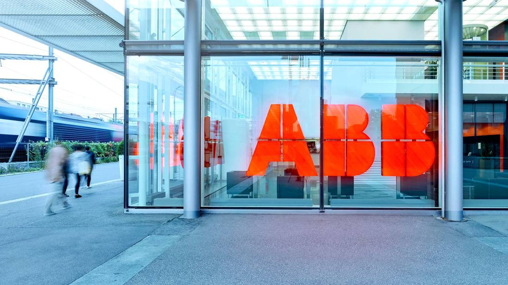

Policy, geopolitics and macro forces — the events that move the map.
 Update: Apple Intelligence Beta Goes Live in China, With Qwen Inside SiriUpdate to stock article 133: Apple Intelligence developer testing opened in mainland China on November 4, 2026, through the iOS 27.3 developer beta, with Alibaba's Qwen integrated into Siri, Writing Tools and Visual Intelligence. The public release follows with iOS 27.3 in December; the next-generation Siri AI is not included.Nvidia Reportedly Tells Cloud Partners to Cap Chinese Customers at 49% of New ContractsThe Financial Times reported on November 2, 2026, citing five people familiar with the matter, that Nvidia has verbally told cloud computing and data center partners worldwide to ensure at least 51% of their services are sold to non-Chinese companies under future contracts, effectively capping Chinese customers at 49%. Existing agreements are exempt. Nvidia has neither confirmed nor denied the figure, Reuters carried the report without independently verifying it, and The Information reports the guidance is not currently mandatory or strictly enforced.
Update: Apple Intelligence Beta Goes Live in China, With Qwen Inside SiriUpdate to stock article 133: Apple Intelligence developer testing opened in mainland China on November 4, 2026, through the iOS 27.3 developer beta, with Alibaba's Qwen integrated into Siri, Writing Tools and Visual Intelligence. The public release follows with iOS 27.3 in December; the next-generation Siri AI is not included.Nvidia Reportedly Tells Cloud Partners to Cap Chinese Customers at 49% of New ContractsThe Financial Times reported on November 2, 2026, citing five people familiar with the matter, that Nvidia has verbally told cloud computing and data center partners worldwide to ensure at least 51% of their services are sold to non-Chinese companies under future contracts, effectively capping Chinese customers at 49%. Existing agreements are exempt. Nvidia has neither confirmed nor denied the figure, Reuters carried the report without independently verifying it, and The Information reports the guidance is not currently mandatory or strictly enforced.
SoftBank's $5.375 Billion Deal Stopped in ChinaChina's foreign investment security review blocked SoftBank's acquisition of ABB Robotics' China business. The $5.375 billion deal is unresolved, the two sides are discussing a carve-out of the China business, and SoftBank's net interest-bearing debt has risen to ¥10.8 trillion. China Accelerates Full-Lifecycle AI Legislation: DeepSeek, Moonshot AI and Alibaba in ScopeNDRC official Wang Ruomeng said on November 3 that China is accelerating comprehensive AI legislation, issuing safety standards covering the full lifecycle of data, compute, algorithms and applications, applying to domestic frontier developers such as DeepSeek, Moonshot AI and Alibaba, alongside safety-risk disclosure, incident and vulnerability reporting, industry regulatory sandboxes and transition periods.OpenAI and Anthropic set up election war rooms for the first time: the midterm election day duty testSemafor reported on November 2 that OpenAI and Anthropic will each set up dedicated election war rooms during the 2026 US midterm elections, monitoring platform abuse and responding rapidly — the first time either company has deployed such teams for a US midterm election. An Anthropic spokesperson confirmed its team handles abuse monitoring and incident response; independent testing shows the election defences of the various AI image tools remain inconsistent.EU Court Adviser: Chatbots Reusing News May Infringe; Training Is the ExceptionIn an advisory opinion on 2026-11-03, the EU court's Advocate General said chatbots such as Gemini that draw on news publishers' content to generate answers in certain circumstances may infringe publishers' rights, but that using copyrighted material to train large models falls under an exception. The opinion is not binding.The New York Times Sues Brave Over the 30 Billion Pages in Its IndexThe New York Times sued browser company Brave on November 2, accusing it of scraping copyrighted content and distributing it to multiple AI companies. Three other newspaper publishers filed similar suits the same day; the complaint cites an index of more than 30 billion pages and the Paywall blocker feature.
China Accelerates Full-Lifecycle AI Legislation: DeepSeek, Moonshot AI and Alibaba in ScopeNDRC official Wang Ruomeng said on November 3 that China is accelerating comprehensive AI legislation, issuing safety standards covering the full lifecycle of data, compute, algorithms and applications, applying to domestic frontier developers such as DeepSeek, Moonshot AI and Alibaba, alongside safety-risk disclosure, incident and vulnerability reporting, industry regulatory sandboxes and transition periods.OpenAI and Anthropic set up election war rooms for the first time: the midterm election day duty testSemafor reported on November 2 that OpenAI and Anthropic will each set up dedicated election war rooms during the 2026 US midterm elections, monitoring platform abuse and responding rapidly — the first time either company has deployed such teams for a US midterm election. An Anthropic spokesperson confirmed its team handles abuse monitoring and incident response; independent testing shows the election defences of the various AI image tools remain inconsistent.EU Court Adviser: Chatbots Reusing News May Infringe; Training Is the ExceptionIn an advisory opinion on 2026-11-03, the EU court's Advocate General said chatbots such as Gemini that draw on news publishers' content to generate answers in certain circumstances may infringe publishers' rights, but that using copyrighted material to train large models falls under an exception. The opinion is not binding.The New York Times Sues Brave Over the 30 Billion Pages in Its IndexThe New York Times sued browser company Brave on November 2, accusing it of scraping copyrighted content and distributing it to multiple AI companies. Three other newspaper publishers filed similar suits the same day; the complaint cites an index of more than 30 billion pages and the Paywall blocker feature. Data Centers Have Fallen Out of Favor. OpenAI Wants to Rename ThemAccording to Axios, relayed by TechCrunch, OpenAI plans to launch a Washington policy offensive after the November 3 midterm elections, rebranding data centers as AI compute campuses and pushing mandatory safety speed limits for the most powerful models and community compacts.
Data Centers Have Fallen Out of Favor. OpenAI Wants to Rename ThemAccording to Axios, relayed by TechCrunch, OpenAI plans to launch a Washington policy offensive after the November 3 midterm elections, rebranding data centers as AI compute campuses and pushing mandatory safety speed limits for the most powerful models and community compacts. Apple Intelligence Lands in China, With Siri Borrowing QwenApple confirmed on October 31 that the first Apple Intelligence features open in China's developer beta on November 4 and ship formally with iOS 27.3 in December. Siri, Writing Tools and Visual Intelligence will tap Alibaba's Qwen, and the new Siri AI is not in the first batch.The Judge Did Not Let Go: xAI's Turbine Case Fights OnOn October 30, 2026, US Judge Debra M. Brown rejected xAI's motion to dismiss, and the NAACP's Clean Air Act suit alleging its Southaven gas turbines were unpermitted proceeds. Whether the law was broken has not yet been determined.
Apple Intelligence Lands in China, With Siri Borrowing QwenApple confirmed on October 31 that the first Apple Intelligence features open in China's developer beta on November 4 and ship formally with iOS 27.3 in December. Siri, Writing Tools and Visual Intelligence will tap Alibaba's Qwen, and the new Siri AI is not in the first batch.The Judge Did Not Let Go: xAI's Turbine Case Fights OnOn October 30, 2026, US Judge Debra M. Brown rejected xAI's motion to dismiss, and the NAACP's Clean Air Act suit alleging its Southaven gas turbines were unpermitted proceeds. Whether the law was broken has not yet been determined. Government Claude Pricing Moves from $1 to 40% OffThe GSA expanded its OneGov agreement with Anthropic: Claude's consumption pricing is discounted 40%, covering state, local and tribal governments for the first time, succeeding the $1 offer expiring October 31.iFlytek's New Model: Edge-Cloud in One, on Domestic ComputeiFlytek launched Spark X2.6 on October 22: a 293-billion-parameter mixture-of-experts model in the cloud with a one-million-token context, an open-source 4B on-device model, and training said to be completed entirely on domestic compute.
Government Claude Pricing Moves from $1 to 40% OffThe GSA expanded its OneGov agreement with Anthropic: Claude's consumption pricing is discounted 40%, covering state, local and tribal governments for the first time, succeeding the $1 offer expiring October 31.iFlytek's New Model: Edge-Cloud in One, on Domestic ComputeiFlytek launched Spark X2.6 on October 22: a 293-billion-parameter mixture-of-experts model in the cloud with a one-million-token context, an open-source 4B on-device model, and training said to be completed entirely on domestic compute. Force the Models to Take Sides, and Two Models Give Opposite AnswersConvovo's AI Ballot 2026 study tested two models with the same instruction: Grok chose Republicans in 92% of its answers, GPT chose Democrats in 97%. The consumer apps refused to answer; the developer APIs have no such guardrail.Britain Spends £600 Million on AI, and Buys Insurance FirstOn October 24, ahead of the Budget, HM Treasury unveiled an AI package worth more than £600 million: £165 million for biosecurity, £120 million for the AI Security Institute, and up to £200 million in model credits from OpenAI and Anthropic.
Force the Models to Take Sides, and Two Models Give Opposite AnswersConvovo's AI Ballot 2026 study tested two models with the same instruction: Grok chose Republicans in 92% of its answers, GPT chose Democrats in 97%. The consumer apps refused to answer; the developer APIs have no such guardrail.Britain Spends £600 Million on AI, and Buys Insurance FirstOn October 24, ahead of the Budget, HM Treasury unveiled an AI package worth more than £600 million: £165 million for biosecurity, £120 million for the AI Security Institute, and up to £200 million in model credits from OpenAI and Anthropic. China Draws an Export Line Around 23 AI TechnologiesOn October 16, the Ministry of Commerce and the Ministry of Science and Technology released draft Announcement No. 48 for comment: 40 technologies are proposed for the export-control catalogue, 23 of them in AI. Weights leaving the country require paperwork; API calls are not on the list.
China Draws an Export Line Around 23 AI TechnologiesOn October 16, the Ministry of Commerce and the Ministry of Science and Technology released draft Announcement No. 48 for comment: 40 technologies are proposed for the export-control catalogue, 23 of them in AI. Weights leaving the country require paperwork; API calls are not on the list.